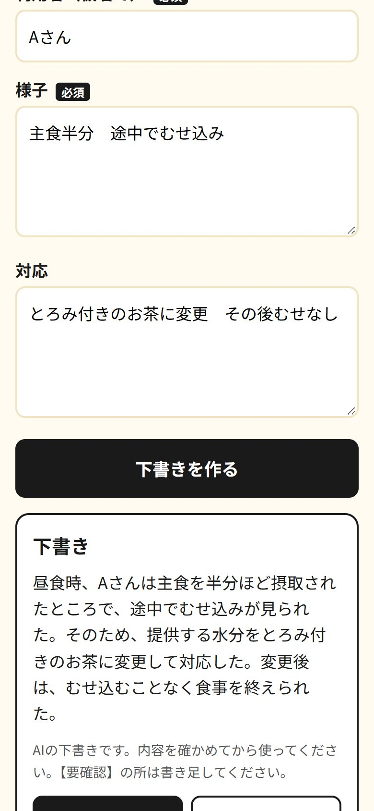
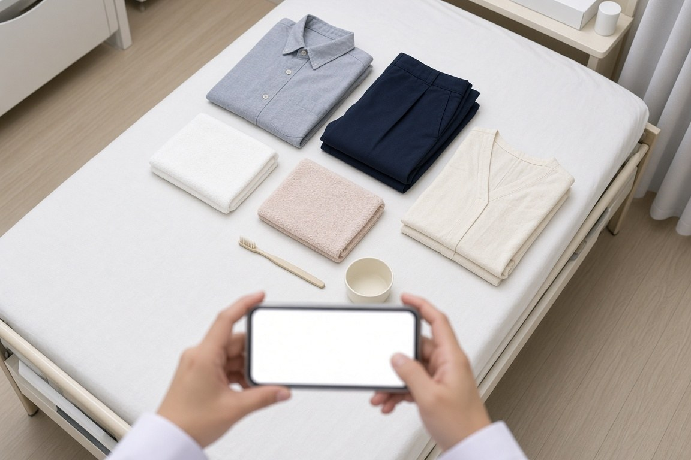

今のやり方は変えません。
お役に立てることは、この2つです。
今お使いの記録ソフトや紙の書式は、そのままです。
入れ替えるのではなく、その手前の「文章を考えて書く時間」と、「月末の兼務の集計」だけを対象にしています。

現場メモから自動作成される画面（てますい）① 毎日の記録と、ご家族への連絡
「てますい」で、下書きにかかる時間を短くします。
走り書きのメモを入れるか、スマートフォンに話しかけると、数秒で下書きが出ます。中身を確かめて、いつもの記録用紙やソフトにコピーして貼ってください。
- ホームの介護：ユニットごとの介護記録、申し送り、ご家族への連絡文
- 生活相談：入居や日程のご家族への連絡文、ケアマネや関係先へのメール
- デイ：連絡帳（入浴・食事・レクの様子）、送迎の変更、欠席の電話メモ
- お泊まりの日：日中の連絡帳に続けて、夜の様子も同じように下書きできます
夜勤は夕方から翌朝10時までです。明けて残る記録や、ホームとデイの両方に関わる日の書類を、その慌ただしい時間に少しでも減らせれば、と考えています。
※ホームの記録とデイの連絡帳で書式が異なっていても問題ありません。できた下書きを今の用紙に貼るだけで活用いただけます。
② 月末の兼務・常勤換算の集計
今お使いのタイムカードや勤務表に合わせて、集計の手順を整理します。
ホームとデイを併設していると、同じ人が両方を兼ねることが多く、送迎に出た時間を除く作業や、毎月末の勤務形態の一覧には、神経と時間がかかります。
今の表を拝見して、どこまで短くできそうか一緒に見ます。対応できる範囲は、その場で率直に申し上げます。
※てますいとは別のご相談です。集計の仕組みを作る費用はいただきません。使い続けるときの月額だけ、作る前にご相談します。
走り書きのメモを入れるだけで、数秒で丁寧な下書きに
下の文は、てますいの見本画面に実際に入力して作成された文章例です（利用者様のお名前は「Aさん」などの仮名で入力します）。
様子：14時 水分でむせ2回
対応：様子見 その後 表情よし
14時、A様が水分摂取時に2回むせ込みが見られました。
職員が見守り対応を行い、その後の表情は穏やかで落ち着いていらっしゃいます。
その後は表情よく落ち着いて過ごしている
引き続き見守る
〇〇様のご家族様
いつも施設での生活にご理解とご協力をいただき、誠にありがとうございます。
本日14時頃、お茶を召し上がった際に2回むせ込みがございました。
その後は表情も落ち着かれ、穏やかにお過ごしです。引き続きお身体の様子をしっかりと見守ってまいります。
何か気になる点がございましたら、いつでもご連絡くださいませ。
〇〇（施設名）
※入力メモにない情報（時間・数値・病名など）をAIが勝手に推測して付け足すことはありません。不足がある部分は【要確認】として残します。キーボード入力のほか、スマートフォンのマイクに話しかけて音声入力することも可能です。
操作はこの3ステップだけです。新しいアプリのインストールは不要です。
全員が一斉に使い始める必要はありません。使ってみたいスタッフ様から自由にお試しいただけます。
最終的な記録の確認と保存は、これまでどおり職員の皆様の手で行っていただくため安心です。
実際の画面は、お名前の登録なしですぐにお試しいただけます（入力内容は保存されません）。
care.himawasa-sync.com/demo

広げたお荷物を撮影するだけで一覧化。ご退所・お返しの際の照合もスムーズです。
受診予定や往診、お薬の確認などを、事務所と現場でリアルタイムに共有できます。
個人情報の取り扱いとセキュリティ
| 保存するもの・しないもの | 書類の下書きに入力されたメモや音声データは、システム上に一切保存されません。持ち物チェックのお名前・写真、予定カレンダーの名簿・予定のみ、貴施設専用の安全な領域に保存され、他施設からは一切見えません。 |
|---|---|
| AIの学習利用について | 文章作成には Google Cloud のセキュアな AI（Vertex AI）を採用しています。入力されたデータが AI の学習（再利用）に使われることは一切ございません。 |
| AIが作成する文章の安全性 | メモにない事実は勝手に創作せず、確認が必要な箇所は【要確認】と明記されます。完成した文章は、必ず職員様が目視で確認してからご利用いただけます。 |
| 現在の記録ソフト・書式 | 現在ご利用中のソフトや手書きの帳票をそのまま継続してお使いいただけます。作成された下書きをコピーして貼り付けるだけのシンプルな運用です。 |
| サポート体制 | HiMaWaSa Sync の岩城が直接サポートいたします（メール：iwaki@himawasa-sync.com）。 |
ホームとデイ、いま「一番重い作業」からひとつだけ
すべての施設や業務を一度に変える必要はまったくございません。
現場や管理業務の中で、いま一番時間がかかり、負担になっている作業をひとつだけお聞かせください。
デイサービスの一日
「連絡帳が、帰りの送迎までに書き切れない」
「送迎の変更や、欠席の電話メモが残ってしまう」
「お泊まりの日は、夜の記録作成まで続く」
生活相談員・夜勤の記録
「ご家族への連絡文や、ケアマネへのメールに時間がかかる」
「日程の連絡で、言葉選びに気を遣う」
「明けてから書く、夜の記録がもう一段ある」
月末の兼務・時間集計
「ホームとデイの兼務時間を、手作業で切り分けている」
「送迎時間を相談員の時間から除外できているか、確認が大変」
「毎月末の勤務形態一覧表づくりに追われる」
いちばん重いところは、ホームとデイで違います。
「まずこれを軽くしたい」という作業から、ひとつずつで大丈夫です。
実際の画面を一緒にご確認いただきながら、「今のやり方のままで、どこまで負担を軽くできそうか」を率直にお伝えいたします。
ご都合のよろしいタイミングで、お気軽にメールにてお声がけいただけますと幸いです。
まずはお困りごとを、15分お聞かせください
「現場の負担が本当にひとつ軽くなるか」を一緒に確認する15分にできれば幸いです。
少し落ち着いたタイミングで構いませんので、メールにてお気軽にお声がけください。
── 業務をもっと、シンプルに。
担当：岩城 弘（いわき ひろし） DX相談担当
メール iwaki@himawasa-sync.com
🌐 himawasa-sync.com
てますいのご紹介 himawasa-sync.com/temasui/